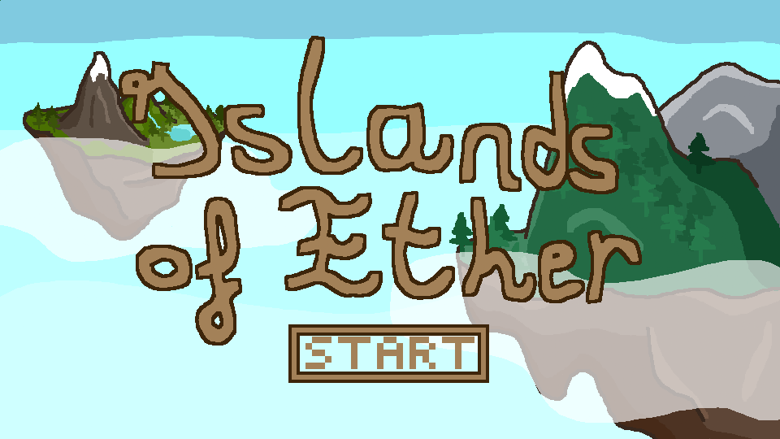

Vue d'ensemble de mes projets
Retrouvez sur cette page quelques uns de mes projets.
Format'IUT
Tout au long du 3ème semestre du BUT Informatique, nous avions pour mission de réaliser un site web dynamique permettant de gérer les offres de stage et d'alternance pour les étudiants du département informatique. Sur ce site, les étudiants peuvent postuler à des offres publiées par des entreprises et validées par un administrateur.

Capture d'écran de Format'IUT (côté administrateur)
Lien du siteThe Penguin Ice Floe
A l'occasion de la Nuit de l'Info 2023 à Polyech Montpellier, mes collègues et moi avons réalisé un site traitant la problématique du réchauffement climatique.

Capture d'écran de la page d'accueil
Lien du siteCode Game Jams
Nous avons participé avec mes camarades aux Code Game Jam 2023 et 2024, des concours de création de jeu vidéo en 30h. La première fois nous avons tenté de créer un jeu de plateformes intitulé Glove, sur le thème "Maître du temps". Ce projet fut un échec car nous avons perdu une grande partie des fichiers du jeu.
Notre deuxième participation fut plus fructueuse, même si nous n'avons pas pu finir le jeu à temps, nous avons tout de même pu rendre une ébauche en partie jouable. Ce jeu était un jeu de cartes intitulé Islands of Ether et devait répondre au thème "Légendes étherées"
Capture d'écran du seul niveau restant de Glove
Capture d'écran de l'écran titre du jeu Islands of Ether
Les aventuriers du rail
Lors de notre 1ère année de BUT Informatique nous devions programmer un jeu de plateau Les Aventuriers du Rail ainsi qu'implémenter une interface homme-machine.
Capture d'écran de l'interface du jeu